Morgue
| Morgue | |
|---|---|
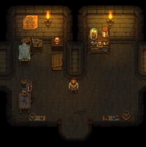 | |
Location information
| |
Buildable
|
True |
Exits
|
Alchemy Lab, Workyard, Souls room |
Npcs
| |
| Gerry | |

The morgue is one of the first important areas you see in the game. You process bodies here. Regardless of whether you toss corpses in the river, burn them, or bury them in a grave, it is recommended that you process their body in the morgue first. The morgue is where you can find Gerry. It's also here, where you can create and alter zombies to take over parts of your tiresome workload.
Deliveries and Capacity
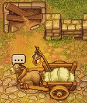 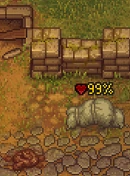 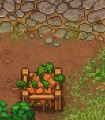
The 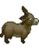 corpse daily as long as the number of bodies you have unfinished does not exceed the capacity . It is dropped on the road in front of the morgue. After reopening the church, you'll have to put 5×
corpse daily as long as the number of bodies you have unfinished does not exceed the capacity . It is dropped on the road in front of the morgue. After reopening the church, you'll have to put 5×
carrot per  corpse into the donkey's box (must be built first) to "pay" for the deliveries.
corpse into the donkey's box (must be built first) to "pay" for the deliveries.
Bodies count against this capacity even when outside the morgue. Once a body is buried, cremated, or tossed in the river, it does no longer count against . Once made into a  zombie on a resurrection table, the body also doesn't count any more, even when it occupies a work station.
zombie on a resurrection table, the body also doesn't count any more, even when it occupies a work station.
Corpses inside the morgue will decay slower than corpses outside. A corpse on a pallet will decay slower than those left on the floor. See corpses for more information.
Corpse Hatch

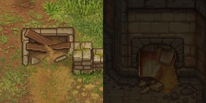
The corpse hatch allows corpses to be dropped directly into the morgue where they will decay slower. The benefit of repairing the hatch is slight so it is often not worth it to repair until later.
| Icon | Materials Required | Energy | Notes |
|---|---|---|---|
| Fix corpse hatch | 2× A piece of stone |
Repair must be done twice. Both inside the morgue and outside. |


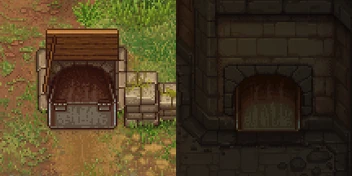
After fixing the hatch, the donkey delivers the corpse directly into the morgue. It will appear directly in front of the hatch. Unfortunately, there is no means to store it automatically onto a pallet to halt its decay completely. At least, the decay is slowed down that way.
Workbench


The workbench, called "mortuary desk", has to be repaired first, before using it. After learning the appropriate techniques, you can put up a lot of different workstations here:
| Mortuary desk | |||
|---|---|---|---|
| Blueprint | Required Materials | Size | Notes |
 Repair mortuary desk Repair mortuary desk
|
2× Flitch 2× Simple iron parts |
This must be done first. | |
| Preparation place | 12× Flitch 4× Complex iron parts 8× Nails |
5x4 | Requires First slice Adds 1 |
| Preparation place II | 6× Wooden plank 4× Steel parts 6× Nails |
5x4 | Requires Anatomy II Adds 1 |
| Embalming table | 8× Wooden plank 4× Complex iron parts 6× Nails |
4x4 | Requires Embalming Adds 1 |
| Embalming table II | 10× Wooden plank 4× Steel parts 4× Advanced conical flasks |
4x4 | Requires Embalming II Adds 1 |
| Pallet | 6× Flitch 4× Nails |
4x3
(rotatable) |
Requires First slice Adds 1 |
| Double pallet | 12× Flitch 10× Nails |
4x3
(rotatable) |
Requires Anatomy II Adds 2 |
| Fridge pallet | 12× Flitch 12× Nails 5× Complex iron parts |
4x3
(rotatable) |
Requires Embalming II Adds 2 |
| Mortuary rack | 8× Flitch 6× Nails 2× Wooden beam |
4x2 | Requires Embalming Decorative storage for 25 items. |
| Resurrection table | 4× Wooden plank 4× Complex iron parts |
5x4 | Requires Second chance Produce zombies here. |
Autopsies
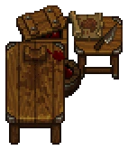
(Possible Bug Warning: Corpses that spawned in the graveyard at the start of game may not acknowledge organs or parts put into them, effectively 'eating' the parts with no benefit. Parts can still be removed as normal. If you exhume a corpse with 100% freshness from the right/east side of the graveyard, be wary of trying to improve it via autopsy)
Use the preparation place to remove or insert body parts from corpses or zombies. Each organ has a different effect on  and
and  of a body and are required for crafting ingredients and completing quests. Corpse rating impacts
of a body and are required for crafting ingredients and completing quests. Corpse rating impacts  . For each
. For each  a corpse has, its
a corpse has, its  will be reduced by one and a grave's max rating is limited by the number of
will be reduced by one and a grave's max rating is limited by the number of  a corpse has. A grave cannot have a higher
a corpse has. A grave cannot have a higher  than the number of
than the number of  of a buried corpse. For the full article on how corpse rating works, see corpses. Here is a table of each part that can be removed/inserted and its effects as shown by the cultist perk:
of a buried corpse. For the full article on how corpse rating works, see corpses. Here is a table of each part that can be removed/inserted and its effects as shown by the cultist perk:
| Preparation place Preparation place II | |||
|---|---|---|---|
| Body Part | Effect on corpse ratings upon removal | Technology | |
| Flesh |
- |
No effect | First Slice |
| Blood |
+ |
- |
Softspares |
| Fat |
+ |
- |
Softspares |
| Bone |
No effect | No effect | Hardspares |
| Skin |
- |
+ |
Hardspares |
| Skull |
No effect | + |
Hardspares |
| Brain |
Randomly between
+ |
Randomly between
+ |
Important Parts |
| Heart |
Important Parts | ||
| Intestine |
Important Parts | ||
| Dark brain |
- |
- |
Dark Bodies |
| Dark heart |
- |
- |
Dark Bodies |
| Dark intestine |
- |
- |
Dark Bodies |
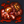 Surgeon's Mistake |
- |
+ |
None |

The number of skulls on a corpse is a combination of the number of the skulls on all its parts, as can be seen once Inquisitor's quest line advances far enough and the cultist perk is taken.
All skull variation comes from the Important Parts, Brain, Heart and Intestine. However the generation of those is not as simple as the table makes it out to be. And in fact varies based on the stage of the game. For example, during the Inquisitor's questline you will start finding +


 , +
, + important parts which would be dark important parts when his quest line is progressed further.
important parts which would be dark important parts when his quest line is progressed further.
Once you have a good preparation table and the surgeon perk it should be possible to start cherry-picking important parts, either by remembering their effects and sorting them into separate storages, or, preferably, by utilising the cultist perk.
You can noticeably unburden your embalming efforts by collecting the better parts and making "frankencorpses" with them. A corpse with best possible variable parts in all 3 slots and both Blood and Fat removed will be only 1  away from 12. Though considering that best parts are rare it is probably best to compromise.
away from 12. Though considering that best parts are rare it is probably best to compromise.
Also since zombies ignore all  , it's a good idea to keep parts with both skull counts high for use on zombies.
, it's a good idea to keep parts with both skull counts high for use on zombies.
There is one exception to the regular corpse rules. The body of an ex-graveyard keeper found after excavating the archeology machine in the Talking Skull Cellar has two brains, and no blood or fat.
Embalming
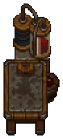
A corpse or zombie can be placed on the table and injected with embalming fluid to change its properties. A body may only be injected with each kind of liquid once.
| Embalming table Embalming table II | ||
|---|---|---|
| Name | Effects | Technology |
| Lye injection |
+ |
Embalming Liquids |
| Acid injection |
- |
Embalming Liquids |
| Glue injection |
+ |
Embalming Liquids II |
| Preservative injection |
Halts body decay | Embalming Liquids II |
| Restore injection |
Reduces body decay by 50 % | Embalming Liquids II |
| Dark injection |
+ |
Embalming Liquids III |
| Silver injection |
- |
Embalming Liquids III |
| Gold injection |
- |
Embalming Liquids III |
Resurrection
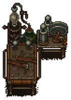
A  corpse can be placed on the Resurrection table to make a
corpse can be placed on the Resurrection table to make a  zombie from it. You need first to talk to Gunter in order to be able to build the table. To revive one, you'll need 10×
zombie from it. You need first to talk to Gunter in order to be able to build the table. To revive one, you'll need 10×
faith, 1×
zombie juice, and - of course - the  corpse.
corpse.
| |||||